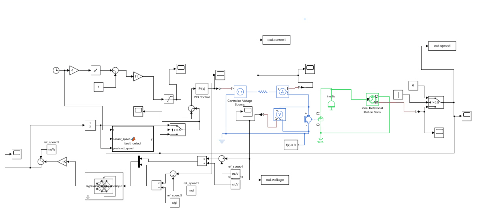
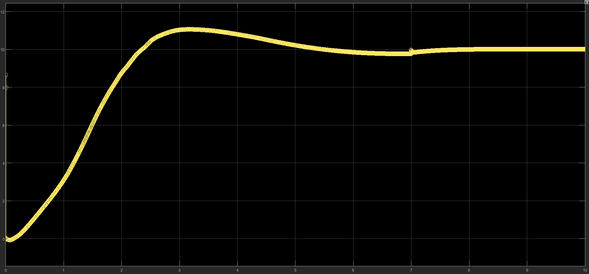

Project Detail
DC Motor Fault Detection
A Long Short-Term Memory (LSTM)-based system developed in MATLAB and Simulink to detect motor speed-sensor failures.
Project Description

This project focused on developing a fault-detection system for a DC motor using MATLAB and Simulink. The system uses an Long Short-Term Memory neural network to identify abnormal motor behavior caused by sensor failures and replace their outputs.
During the training phase, the machine-learning block received the motor voltage, torque, current, and angular-speed measurements as inputs in a very large number of operating conditions. The Neural Network learned to identify the output of one sensor given the other three sensor measurements. A sensor failure was then simulated to evaluate whether the system could automatically replace the failed sensor's signal with the output of the machine-learning block. This allowed the motor or pump to continue operating while operators replaced the sensor, helping avoid the significant costs associated with stopping large industrial equipment unnecessarily. However, in the event that two or more sensors failed simultaneously, the motor would be shutdown to prevent damages.

Motor data was processed and analyzed to distinguish normal operating conditions from fault conditions. The model was then evaluated based on its ability to detect changes in the motor response and provide an early indication of a sensor problem. It then replaced the faulty sensor by using it's output to continue operating until a technician could replace the sensor.
- Modeled DC motor behavior in MATLAB and Simulink
- Generated and processed motor sensor data
- Developed an LSTM-based fault-detection approach
- Evaluated the model’s ability to identify speed-sensor failures